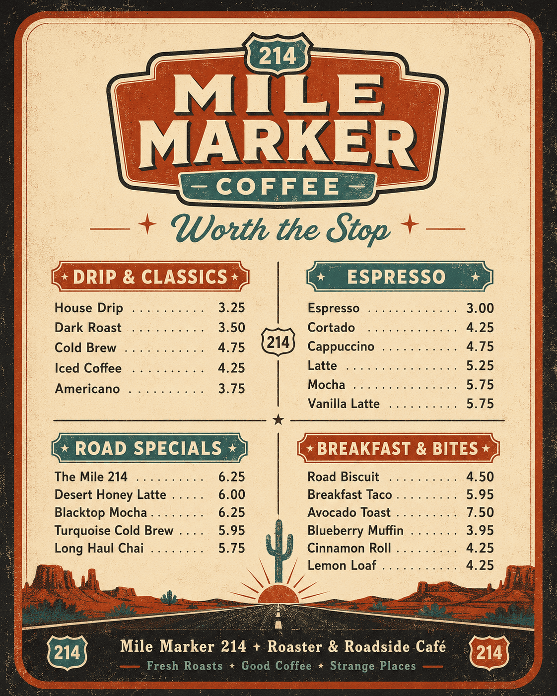

Served Daily
Coffee, Breakfast & Road Specials
Served daily from 6:00 AM until the last traveler leaves.
Menu Board
Road food. Real coffee.
Drip & Classics
- $3.25
House Drip
Fresh-brewed rotating house coffee.
- $3.50
Dark Roast
Full-bodied cup with cocoa and toasted pecan.
- $4.75
Cold Brew
Steeped low and slow for a smooth finish.
- $4.25
Iced Coffee
Chilled house coffee over clean ice.
- $3.75
Americano
Espresso opened up with hot water.
Espresso
- $3.00
Espresso
Our Night Drive roast pulled short and sweet.
- $4.25
Cortado
Equal parts espresso and warm milk.
- $4.75
Cappuccino
Classic espresso, steamed milk, and foam.
- $5.25
Latte
Balanced espresso and steamed milk.
- $5.75
Mocha
Chocolate, espresso, milk, and a dusty cocoa finish.
- $5.75
Vanilla Latte
House vanilla syrup with espresso and steamed milk.
Road Specials
- $6.25
The Mile 214
Espresso, brown sugar, cinnamon, steamed milk, and sea salt.
- $6.00
Desert Honey Latte
Local honey, espresso, vanilla, and orange zest.
- $6.25
Blacktop Mocha
Dark chocolate, espresso, and a smoky chile whisper.
- $5.95
Turquoise Cold Brew
Cold brew, vanilla cream, mineral salt, and sparkling water.
- $5.75
Long Haul Chai
Black tea, warming spices, oat milk, and honey.
Breakfast & Bites
- $4.50
Road Biscuit
Buttermilk biscuit with peppered honey butter.
- $5.95
Breakfast Taco
Egg, potato, salsa, and optional brisket crumble.
- $7.50
Avocado Toast
Seeded toast, lime, chile oil, and pickled onion.
- $3.95
Blueberry Muffin
Soft crumb, brown sugar top, and desert-sized berries.
- $4.25
Cinnamon Roll
Baked early with coffee glaze.
- $4.25
Lemon Loaf
Bright, simple, and wrapped for the road.
The Menu Board
Original poster art.
The supplied menu artwork is preserved here as a visual brand piece. The full menu above is recreated as live text for accessibility.
